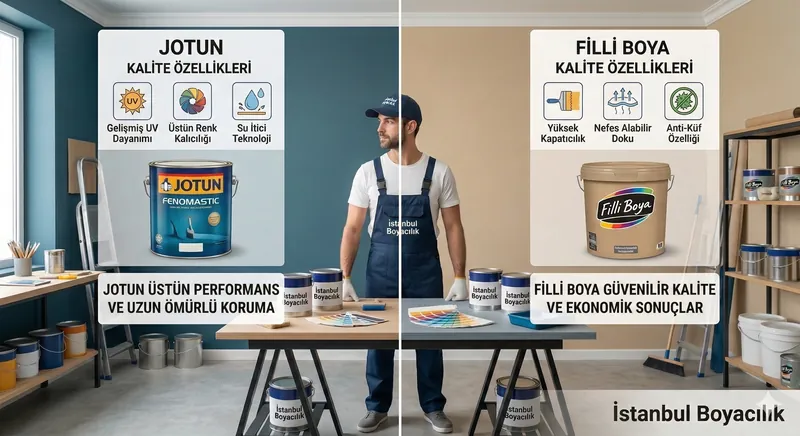

Jotun mu Filli Boya mı? Salonda mat görünüm seçimi
Salon duvarı için karşılaştırdığımız iki gerçek ürün Jotun Fenomastic Güzel Evim Zengin Mat ve Filli Boya Momento Silan. İkisi de iç cephe duvar boyasıdır; ilk karar noktası zengin mat ile ipeksi mat görünüm arasındaki farktır. Yandan gün ışığı alan duvarda aynı rengin iki bitişini kurumuş numunede görmek, bütün marka için bir kalite sıralaması yapmaktan daha yararlıdır.
Bu tablo üretici beyanlarını aktarır; iki ürüne aynı duvarda uygulanmış bir karşılaştırma testi yapmadık. Ürün ve kaynak kontrolü: 12 Ekim 2026. Jotun föyü 22.12.2025 tarihli; Filli bağlantısındaki föyde açık revizyon tarihi görülmedi.
İç cephe duvar ürünlerinin yayımlanmış özellikleri
| Özellik | Fenomastic Güzel Evim Zengin Mat | Momento Silan |
|---|---|---|
| Yüzey / bitiş | Sıva, saten alçı, beton ve alçı levha; zengin mat | Hazırlanmış iç cephe mineral / eski boyalı duvar; ipeksi mat |
| Tek katta yayılma | 9,6–13,4 m²/L; 25–35 µm kuru film için teorik | 13–22 m²/L; yüzey ve uygulamaya bağlı teorik |
| Son kat sistemi | Föyün önerdiği sistemde 2 kat | Astar üzerine en az 2 kat |
| Katlar arası bekleme | 23°C yüzey ve %50 bağıl nemde en az 6 saat | 4–6 saat; yüksek nem ve düşük sıcaklıkta uzar |
| Temizlenebilirlik | Ürün sayfası: silinebilir | Ürün sayfası: silinebilir ve yıkanabilir |
| Sayısal ıslak sürtünme sınıfı | İncelenen kaynaklarda bulunamadı | İncelenen kaynaklarda bulunamadı |
| Uygulama koşulu | Yüzey en az 5°C; çiğlenme noktasından en az 3°C yüksek | Önerilen hava/yüzey aralığı +5°C ile +30°C |
Teknik sayıların kaynakları: Jotun Zengin Mat teknik föyü (ürün kodu 42882) ve Momento Silan teknik föyü. Görünüm ve temizlenebilirlik tanımları Jotun ürün sayfası ile Filli Boya ürün sayfasından alınmıştır. Tüketim aralıkları farklı film ve yüzey koşullarına dayanır; bunlardan bir ürünün daha örtücü olduğu sonucu çıkmaz.
Gün ışığı alan salon için numunede neye bakmalı?
Seçtiğiniz rengi pencereye yakın ve gölgede kalan bölümlerde inceleyin. Boya tamamen kuruduğunda sabah, akşam ve kullandığınız lambalar açıkken görünümü değerlendirin. Daha mat bir görünüm istiyorsanız Zengin Mat numunesi; ipeksi mat görünümü tercih ediyorsanız Momento Silan numunesi başlangıç olabilir. Bitiş tercihi, tek başına yüzey temizleme dayanımını ölçmez.
Yeni alçıdaki tozuma ve emicilik, rulo izlerini etkiler. Astarı son kat ürününden ayrı seçmeyin: Jotun'un önerdiği sistem ile Filli'nin alçı / eski boyalı yüzey için tarif ettiği hazırlık aynı reçete değildir. Mevcut kaplama bilinmiyorsa önce küçük alanda sistem uyumu kontrol edilir.
Salona gereken litre ve teklif kapsamı
Hesap taban alanından değil, kapı ve pencereler düşüldükten sonra kalan boyanacak duvar alanından yapılır. Tek kat verimi kullanılıyorsa litre = net alan × kat sayısı ÷ m²/L. Tavan boyası, astar, tamir ve olası ek kat ayrı kalemlerdir. Aynı renk ve tarihli bayi fiyatıyla hazırlanan toplam iş teklifi olmadan Jotun'un ya da Filli'nin daha ucuz olduğunu söyleyemeyiz.
İstanbul'daki salonunuz için boya badana keşfinde ışık yönünü, mevcut yüzeyi ve istenen bitişi birlikte değerlendirebiliriz. Yazılı teklifte tam seri, astar sistemi, duvar/tavan ayrımı ve kat sayısı belirtilir; garanti varsa kapsamı teklifin kendi koşullarında yer alır.
Doğru Markayı Birlikte Seçelim
Ücretsiz keşif sırasında mekanınıza en uygun marka ve seriyi belirleyip teklif sunuyoruz.